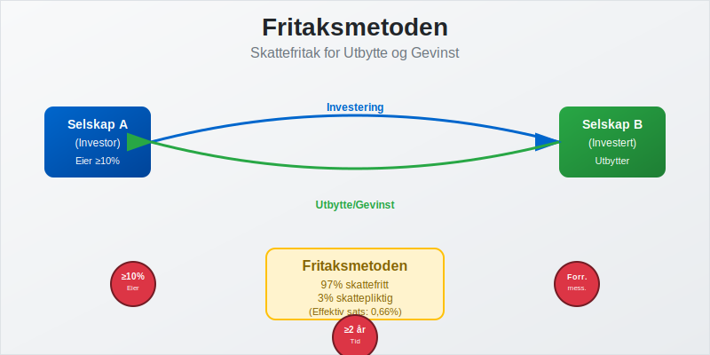
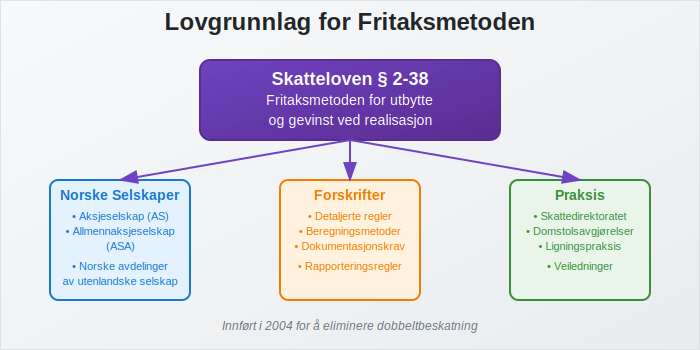
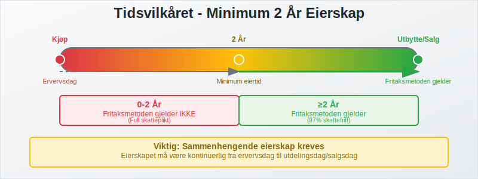
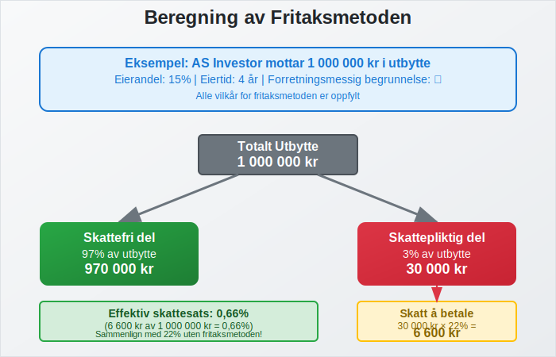
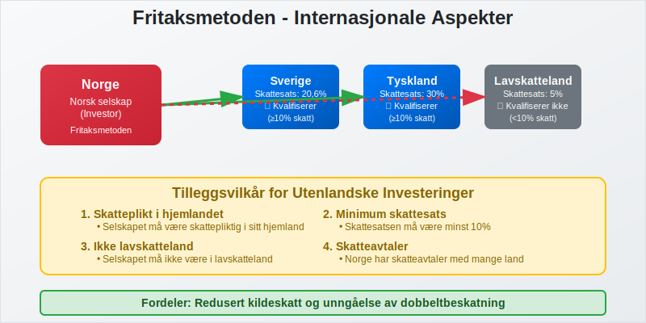
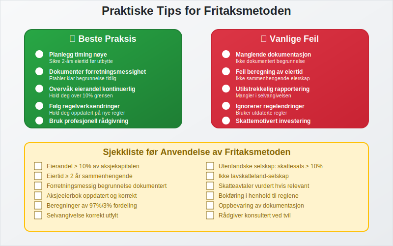

Fritaksmetoden er en sentral skatteregel i norsk skattelovgivning som gir skattefritak for utbytte og gevinst ved salg av aksjer mellom selskaper. Denne metoden ble innført for å eliminere dobbeltbeskatning og stimulere til investeringer mellom norske bedrifter, og er en viktig del av det norske skattesystemet for selskaper.
For en oversikt over skatteregler for aksjegevinster hos både privatpersoner og selskaper, se Skatt på aksjegevinst.
For en komplett oversikt over hvordan fritaksmetoden fungerer sammen med andre skatteordninger for aksjonærer, se vår Aksjonærmodellen - Komplett Guide til Norsk Aksjebeskatning.
Fritaksmetoden sikrer at utbytte og gevinst ved salg av aksjer ikke beskattes på mottakersiden når visse vilkår er oppfylt. Dette gjør det mer attraktivt for selskaper å investere i andre selskaper og bidrar til økt kapitalflyt i norsk næringsliv.

Seksjon 1: Grunnleggende om Fritaksmetoden
1.1 Formål og Bakgrunn
Fritaksmetoden ble innført i skatteloven § 2-38 for å løse problemet med dobbeltbeskatning av selskapsinntekter. Uten denne regelen ville samme inntekt bli beskattet både i det selskapet som tjener pengene og i det selskapet som mottar utbytte eller gevinst.
Hovedformålene med fritaksmetoden:
- Eliminere dobbeltbeskatning: Sikre at inntekt ikke beskattes flere ganger
- Stimulere investeringer: Gjøre det mer attraktivt å investere i andre selskaper
- Øke kapitalflyt: Fremme effektiv allokering av kapital i næringslivet
- Konkurransedyktighet: Sikre at norske selskaper kan konkurrere internasjonalt
1.2 Lovgrunnlag og Hjemmel
Fritaksmetoden er regulert i skatteloven § 2-38 og tilhørende forskrifter. Regelen gjelder for:
- Norske aksjeselskaper (AS)
- Allmennaksjeselskaper (ASA)
- Norske avdelinger av utenlandske selskaper
- Enkelte andre selskapsformer

Seksjon 2: Vilkår for Fritaksmetoden
For at fritaksmetoden skal kunne anvendes, må tre hovedvilkår være oppfylt samtidig:
2.1 Eiervilkåret
Eiervilkåret krever at det investerende selskapet eier minst 10% av aksjekapitalen i det selskapet det mottar utbytte fra eller selger aksjer i.
| Eierandel | Fritaksmetoden | Beskatning |
|---|---|---|
| ≥ 10% | ✅ Gjelder | Skattefritt |
| < 10% | ❌ Gjelder ikke | Skattepliktig |
Viktige punkter ved eiervilkåret:
- Beregnes basert på aksjekapital, ikke stemmerett
- Gjelder både direkte og indirekte eierskap
- Må være oppfylt på tidspunktet for utbytteutdeling eller aksjesalg
2.2 Tidsvilkåret
Tidsvilkåret krever at aksjene har vært eid i minst to år før utbytteutdeling eller salg.
Beregning av eiertid:
- Starter fra ervervsdag til utdelingsdag/salgsdag
- Må være sammenhengende eierskap
- Gjelder også ved økning av eierandel over 10%

2.3 Forretningsmessighetsvilkåret
Forretningsmessighetsvilkåret krever at investeringen har en forretningsmessig begrunnelse og ikke primært er skattemotivert.
Vurderingskriterier:
- Forretningsmessig formål: Investeringen må ha et legitimt forretningsformål
- Ikke skatteunngåelse: Hovedformålet kan ikke være skattebesparelse
- Reell aktivitet: Det investerte selskapet må drive reell virksomhet
Eksempler på forretningsmessige begrunnelser:
- Strategiske investeringer i leverandører eller kunder
- Diversifisering av forretningsportefølje
- Oppkjøp for å oppnå stordriftsfordeler
- Investeringer i teknologi eller kompetanse
Seksjon 3: Beregning og Praktisk Anvendelse
3.1 Beregning av Skattefritak
Når vilkårene er oppfylt, beregnes skattefriheten som følger:
For utbytte:
- 97% av mottatt utbytte er skattefritt
- 3% av mottatt utbytte er skattepliktig (representerer kostnader)
For gevinst ved aksjesalg:
- 97% av gevinsten er skattefritt
- 3% av gevinsten er skattepliktig
| Type inntekt | Skattefri del | Skattepliktig del | Effektiv skattesats |
|---|---|---|---|
| Utbytte | 97% | 3% | 0,66% (3% × 22%) |
| Aksjegevinst | 97% | 3% | 0,66% (3% × 22%) |
3.2 Praktisk Eksempel
Eksempel: AS Investor mottar utbytte
AS Investor eier 15% av aksjene i AS Produsent siden 2020. I 2024 mottar de 1 000 000 kr i utbytte.
Beregning:
- Mottatt utbytte: 1 000 000 kr
- Skattefri del (97%): 970 000 kr
- Skattepliktig del (3%): 30 000 kr
- Skatt å betale: 30 000 kr × 22% = 6 600 kr

Seksjon 4: Tap og Underskudd
4.1 Behandling av Tap
Tap ved salg av aksjer som omfattes av fritaksmetoden behandles spesielt:
- 97% av tapet er ikke fradragsberettiget
- 3% av tapet kan trekkes fra i skattepliktig inntekt
Eksempel på tapsfradrag:
- Tap ved aksjesalg: 500 000 kr
- Ikke fradragsberettiget (97%): 485 000 kr
- Fradragsberettiget (3%): 15 000 kr
4.2 Symmetriprinsippet
Fritaksmetoden følger symmetriprinsippet - samme behandling for gevinst og tap:
| Situasjon | Gevinst/Utbytte | Tap |
|---|---|---|
| Skattefri/ikke fradragsberettiget | 97% | 97% |
| Skattepliktig/fradragsberettiget | 3% | 3% |
Seksjon 5: Internasjonale Aspekter
5.1 Utenlandske Selskaper
Fritaksmetoden gjelder også for investeringer i utenlandske selskaper, men med strengere vilkår:
Tilleggsvilkår for utenlandske investeringer:
- Selskapet må være skattepliktig i hjemlandet
- Skattesatsen i hjemlandet må være minst 10%
- Selskapet må ikke være lavskatteland-selskap
5.2 Skatteavtaler
Norge har skatteavtaler med mange land som påvirker fritaksmetodens anvendelse:
- Redusert kildeskatt på utbytte fra utlandet
- Kredittmetode for skatt betalt i utlandet
- Unngåelse av dobbeltbeskatning

Seksjon 6: Rapportering og Dokumentasjon
6.1 Selvangivelse og Rapportering
Selskaper som anvender fritaksmetoden må dokumentere at vilkårene er oppfylt:
Nødvendig dokumentasjon:
- Aksjeeierbok som viser eierandel og eiertid
- Forretningsmessig begrunnelse for investeringen
- Beregninger av skattefri og skattepliktig del
- Vedtak om utbytteutdeling eller aksjesalg
For mer detaljert informasjon om dokumentasjon og praktisk anvendelse av fritaksmetoden i sammenheng med aksjonærbeskatning, se Aksjonærmodellen - Komplett Guide til Norsk Aksjebeskatning.
6.2 Bokføring og Regnskapsføring
I regnskapsføringen skal fritaksmetoden behandles som følger:
Bokføring av utbytte:
Bankkonto 1 000 000
Utbytteinntekt (skattefri) 970 000
Utbytteinntekt (skattepliktig) 30 000
Bokføring av aksjegevinst:
Bankkonto 2 000 000
Aksjegevinst (skattefri) 1 940 000
Aksjegevinst (skattepliktig) 60 000
Aksjer (kostpris) 1 000 000
Seksjon 7: Endringer og Fremtidige Utviklinger
7.1 Historiske Endringer
Fritaksmetoden har gjennomgått flere viktige endringer siden innføringen:
| År | Endring | Konsekvens |
|---|---|---|
| 2004 | Innføring av fritaksmetoden | Erstattet tidligere kredittmetode |
| 2014 | Skjerping av forretningsmessighetsvilkåret | Strengere krav til begrunnelse |
| 2019 | Endring av tidsvilkåret | Fra 1 til 2 år eiertid |
| 2022 | Presisering av eiervilkåret | Klargjøring av beregningsmetode |
7.2 Fremtidige Utviklinger
Mulige endringer som diskuteres:
- Økt eiervilkår: Fra 10% til 20% eierandel
- Lengre tidsvilkår: Fra 2 til 3 år eiertid
- Strengere forretningsmessighetsvilkår: Mer detaljerte krav
- Internasjonale tilpasninger: Endringer basert på OECD-retningslinjer
Seksjon 8: Sammenligning med Andre Metoder
8.1 Kredittmetoden
Før fritaksmetoden ble kredittmetoden brukt:
| Aspekt | Fritaksmetoden | Kredittmetoden |
|---|---|---|
| Beskatning | 3% av inntekt | 100% av inntekt |
| Fradrag | Nei | Ja, for betalt skatt |
| Kompleksitet | Enkel | Kompleks |
| Administrativt | Lite arbeid | Mye arbeid |
8.2 Internasjonale Modeller
Sammenligning med andre land:
- Sverige: Lignende fritaksmetode med 95% fritak
- Danmark: Utbyttefritak med 100% fritak under visse vilkår
- Tyskland: Delvis fritaksmetode med 95% fritak
- Nederland: Deltakerfritak med lignende struktur
Seksjon 9: Praktiske Råd og Anbefalinger
9.1 Planlegging og Strategi
Viktige hensyn ved investeringsplanlegging:
- Timing: Sikre at tidsvilkåret oppfylles før utbytteutdeling
- Eierandel: Vurdere å øke eierandel til over 10% hvis mulig
- Dokumentasjon: Etablere god dokumentasjon av forretningsmessig begrunnelse
- Skatteoptimalisering: Koordinere med øvrig skatteplanlegging
9.2 Vanlige Feil og Fallgruver
Typiske feil som bør unngås:
- Manglende dokumentasjon av forretningsmessig begrunnelse
- Feil beregning av eiertid eller eierandel
- Utilstrekkelig rapportering i selvangivelsen
- Manglende oppfølging av endringer i regelverket

Seksjon 10: Konklusjon og Oppsummering
Fritaksmetoden er et kraftig verktøy for norske selskaper som ønsker å investere i andre selskaper uten å bli rammet av dobbeltbeskatning. Ved å oppfylle de tre hovedvilkårene - eierskap på minst 10%, eiertid på minst to år, og forretningsmessig begrunnelse - kan selskaper oppnå betydelige skattefordeler.
Nøkkelpunkter å huske:
- 97% skattefritak for utbytte og aksjegevinst
- Strenge vilkår som må oppfylles kontinuerlig
- God dokumentasjon er avgjørende for å kunne anvende metoden
- Regelmessig oppfølging av regelverksendringer er nødvendig
For selskaper som vurderer investeringer i andre selskaper, er det viktig å planlegge nøye og sikre at alle vilkår oppfylles. Ved tvil bør man konsultere regnskapsførere eller skatterådgivere for å sikre korrekt anvendelse av fritaksmetoden.
Relaterte artikler
- Aksjonærmodellen Fritaksmetoden vil fortsette å være en sentral del av norsk skattelovgivning og spille en viktig rolle i å stimulere investeringer og kapitalflyt mellom norske bedrifter.